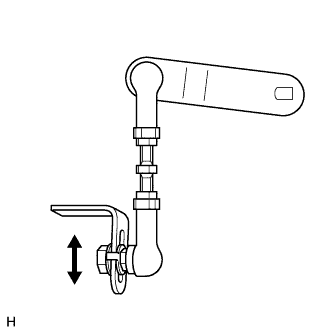

HEIGHT CONTROL SENSOR > INSTALLATION |
| 1. INSTALL REAR HEIGHT CONTROL SENSOR SUB-ASSEMBLY LH |
 |
Install the height control sensor with the 2 bolts.
| *1 | Matchmark |
Align the matchmarks on the link and bracket.
Connect the sensor link with the nut.
Connect the connector, and then attach the connector.
Attach the clamp.
| 2. INSTALL REAR HEIGHT CONTROL SENSOR SUB-ASSEMBLY RH |
| 3. INSTALL REAR WHEEL |
| 4. CONNECT CABLE TO NEGATIVE BATTERY TERMINAL |
| 5. ADJUST VEHICLE HEIGHT |
Suspend vehicle height control by pressing the height control switch.
Put the vehicle on a level surface.
 |
Measure the vehicle height (C - D measurement) on the right side and left side.
If the actual vehicle height differs from the vehicle height (C - D measurement), adjust it by jacking up the frame, etc. (Procedure "A").
|  |
If the procedure "A" differs from the vehicle height (C - D measurement), adjust it by following the procedures below.
Loosen the nut.
Move the height control sensor link up and down along the slotted hole of the bracket.
Adjust the vehicle height to the vehicle height (C - D measurement) while checking the value on the intelligent tester or voltmeter.
Tighten the nut.
If the vehicle height cannot be adjusted by performing procedure "A", adjust it again by following the procedures below.
 |
Loosen the 2 lock nuts of the height control sensor link.
| *1 | Lock Nut |
Adjust the vehicle height to the vehicle height (C - D measurement) by turning the link while checking the value on the intelligent tester or the voltmeter.
Tighten the 2 lock nuts.
Check that the lengths of the screw parts, labeled "A" in the illustration, are within the standard values.
| Item | Specified Condition |
| LH | 6.0 to 12.5 mm (0.237 to 0.492 in.) |
| RH | 6.5 to 15.0 mm (0.256 to 0.590 in.) |
Change the vehicle height (from the normal position to the high position, and from the high position to the normal position).
Measure the vehicle height (C - D measurement) on the right and left side (Procedure "D").
Check if the vehicle height (C - D measurement) is within the specified range.